Equipment
Armor
| Image | Name | Armor | Damage Reduction | Cost | Special |
|---|---|---|---|---|---|
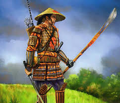 |
Ashigaru | +3 | 1 | 5 koku | none |
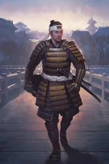 |
Light | +5 | 3 | 25 koku | Wearing light armor increases the TN of all Spell casting, Athletics and Stealth rolls by +5TN |
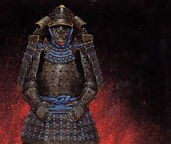 |
Heavy | +10 | 5 | 40 koku | Wearing heavy armor increases the TN of all Spell casting rolls or Skill Rolls using Agility or Reflexes by 5 |
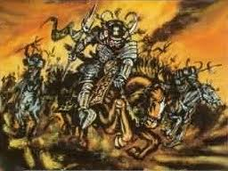 |
Riding | +4, +12 armor while on horseback | 4 | 55 koku | Wearing riding armor increases the TN of all Spell casting, rolls or Skill Rolls using Agility and Reflexes by 5, except on horseback. |
Bows
| Image | Name | Size | Weapon Strength | Minimum Strength | Range | Cost | Special |
|---|---|---|---|---|---|---|---|
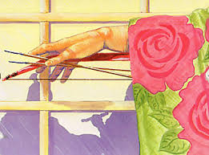 |
Han-kyu | small | 1 | 0 | 100' | 6 koku | Increase the TN of all attack rolls by +10 if used from horseback |
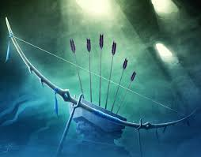 |
Yumi | large | 3 | 0 | 250' | 20 koku | Increase the TN of all attack rolls by +10 if used from horseback |
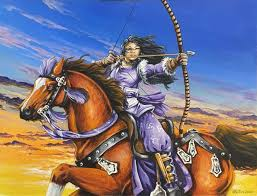 |
Dai-kyu | large | 4 | 3 | 500' | 25 koku | Increase the TN of all attack rolls by +10 if used on foot |
Arrows
| Image | Name | Damage | Cost | Special |
|---|---|---|---|---|
| Armor Piercing | 1k1 | 2bu | Ignores the Armor TN bonus provided by armor | |
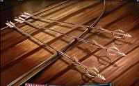 |
Flesh Cutter | 2k3 | 5bu | Double the Armor TN bonus provided by armor; range halved |
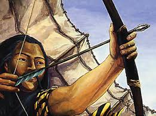 |
Humming Bulb | 0k1 | 5bu | Makes a loud whistling sound |
| Rope Cutter | 1k1 | 3bu | 2 Free Raises for Called shots against inanimate objects; range halved | |
| Willow Leaf | 2k2 | 1bu | None |
Ranged Weapons
| Image | Name | Type | Size | Damage | Range | Cost | Special |
|---|---|---|---|---|---|---|---|
| Blowgun | Ninja | Medium | 1 wound | 50' | 8 zeni | Triples Bonus to Armor TN from armor. Damages increase to 1k1 then 2k1 at Ninjutsu 3/7. | |
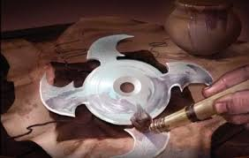 |
Shuriken | Ninja | Small | 1k1 | 25' | 2 bu | Because of their size, shuriken do not add the wielder's Strength to their DR when used as ranged weapons, and their damage dice do not explode. |
| Tsubute | Ninja | Small | 1k1 | 30' | 1 bu | Primarily used to create a distraction or noise from a distance. Because of their size, shuriken do not add the wielder's Strength to their DR when used as ranged weapons, and their damage dice do not explode. |
Melee Weapons
| Image | Name | Type | Size | Damage | Keywords | Cost | Special |
|---|---|---|---|---|---|---|---|
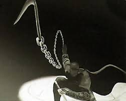 |
Kusarigama | Chain | Large | 0k2 (Kama end), 0k1 (weighted end) | - | 5 koku | none |
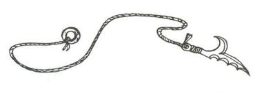 |
Kyoketsu-shogi | Chain | Large | 0k1 | - | 9 bu | Doubles Bonus to Armor TN from armor. |
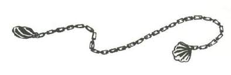 |
Manrikikusari | Chain | Large | 1k1 | - | 3 bu | none |
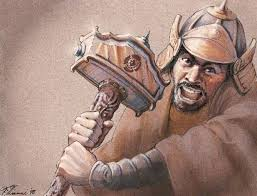 |
Dai-tsuchi | Heavy | Large | 5k2 | - | 15 koku | none |
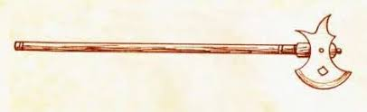 |
Masakiri | Heavy | Medium | 2k3 | - | 8 koku | none |
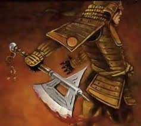 |
Ono | Heavy | Large | 0k4 | - | 20 koku | none |
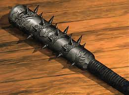 |
Tetsubo | Heavy | Large | 3k3 | - | 20 koku | none |
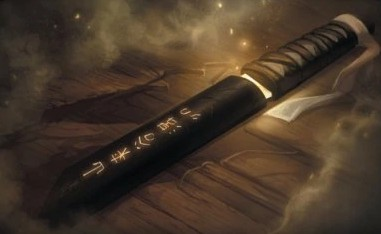 |
Aiguchi & Tanto | Knives | Small | 1k1 | - | 1 koku | none |
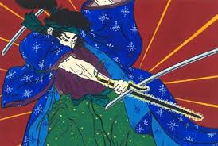 |
Jitte & Sai | Knives | Small | 1k1 | - | 5 bu | none |
| Kama | Knives | Small | 0k2 | - | 5 bu | none | |
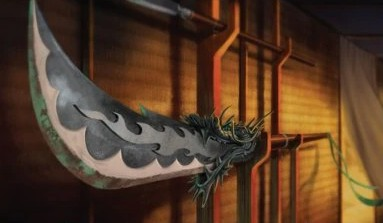 |
Bisento | Polearms | Large | 3k3 | - | 12 koku | none |
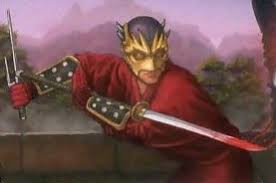 |
Nagamaki | Polearms | Large | 2k3 | - | 8 koku | none |
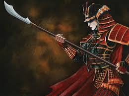 |
Naginata | Polearms | Large | 3k3 | Samurai | 10 koku | none |
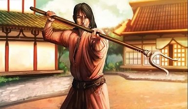 |
Sasumata | Polearms | Large | 0k2 | - | 6 koku | Can be used to initiate a grapple. |
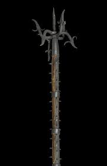 |
Sadegarami | Polearms | Large | 1k1 | - | 6 koku | Can be used to initiate a grapple. |
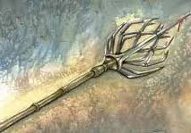 |
Kumade | Spears | Large | 1k1 | Peasant | 3 bu | Breaks if inflicts 25 or more damage. |
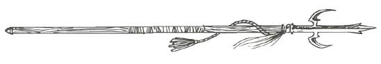 |
Mai chong | Spears | Large | 0k3 | - | 20 koku | Can be thrown up to 25' as a ranged weapon. |
| Lance | Spears | Large | 3k4 | - | 20 koku | Damage reduced to 1k2 when not charging on horseback. Using without charging imposes a penality of 5 on horseback and 10 on foot. Breaks if inflicts 30 or more damage. | |
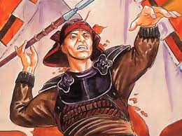 |
Nage-yari | Spears | Large | 1k2 | - | 3 koku | Can be thrown up to 50' as a ranged weapon. |
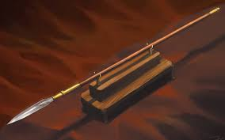 |
Yari | Spears | Large | 2k2 | - | 5 koku | Can be thrown up to 50' as a ranged weapon. Damage rating when thrown is 1k2. |
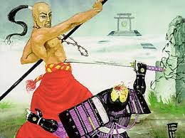 |
Bo | Staves | Large | 1k2 | - | 2 bu | none |
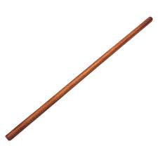 |
Jo | Staves | Medium | 0k2 | - | 1 bu | none |
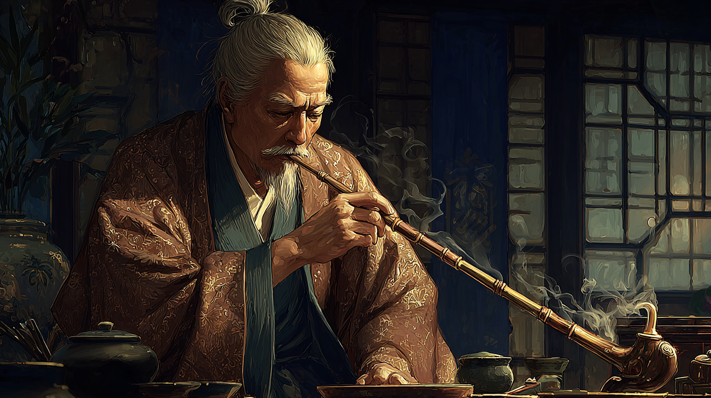 |
Machi-kanshisha | Staves | Medium | 0k2 | - | 20 koku | none |
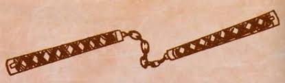 |
Nunchaku | Staves | Small | 1k2 | Peasant | 3 bu | none |
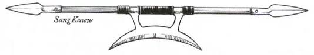 |
Sang kauw | Staves | Medium | 1k2 (crescent blade), 2k1 (shield sang kaw) | - | 10 koku | none |
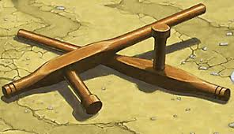 |
Tonfa | Staves | Medium | 0k3 | Peasant | 5 bu | none |
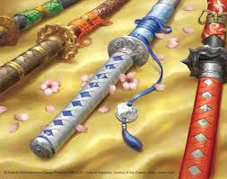 |
Katana | Swords | Medium | 3k2 | Samurai | cannot be bought. (Effective value : 25 koku) | Can spend a void point to increase damage by 1k1. |
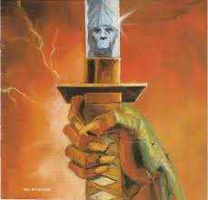 |
Ninja-to | Swords | Medium | 3k2 | Ninja | 5 koku | Counts as small for concealment. Breaks if inflicts 40 or more damage. |
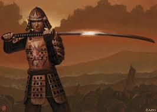 |
No-Dachi | Swords | Large | 3k3 | - | 30 koku | none |
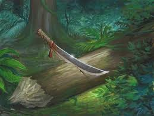 |
Parangu | Swords | Medium | 2k2 | Peasant | 10 bu | Breaks if inflicts 30 or more damage. |
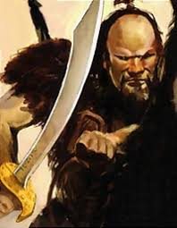 |
Scimitar | Swords | Medium | 2k3 | - | 20 koku | none |
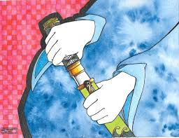 |
Wakizashi | Swords | Medium | 2k2 | Samurai | 15 koku | You may draw a wakizashi as part of the same action as a katana. Can be thrown up to 20' as a ranged weapon. |
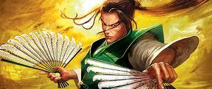 |
War Fan | War Fan | Small | 0k1 | Samurai | 5 koku |